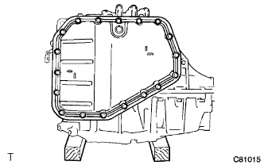
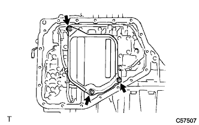

トランスミッションバルブボデーASSY（U441E） 取り外し |
| 1. オートマチック トランスアクスルASSY取りはずし |
参照)| 2. オートマチック トランスアクスルASSY固定 |
|  |
木片を使用して、オイルパン側を上に向けオートマチックトランスアクスルを固定する。
| 3. オートマチックトランスアクスルオイル パンSUB-ASSY(ATM)取りはずし |
 |
ボルト18本をはずし、オイルパンおよびマグネット2個を取りはずす。
| 4. トランスアクスル オイルパン ガスケット (ATM)取りはずし |
オイルパンガスケットをオイルパンから取りはずす。
| 5. バルブボデー オイルストレーナASSY取りはずし |
|  |
ボルト3本をはずし、オイルストレーナを取りはずす。
オイルストレーナからガスケットを取りはずす。
| 6. トランスミッション バルブ ボデーASSY取りはずし |
 |
各コネクターを切り離し、クランプから油温センサを取りはずす。
ボルト14本を取りはずす。
 |
 |
マニュアルバルブのリンクをはずし、バルブボデーASSYを取りはずす。